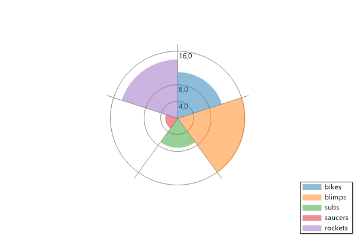
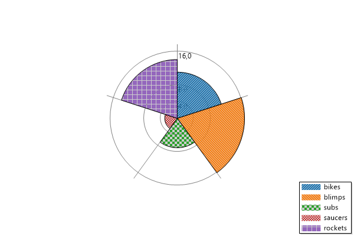
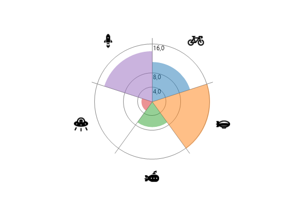

This page contains recipes for the Coxcomb Chart category.
Visit the Cookbook Home Page to view all cookbook recipes.
Visit the Cookbook Home Page to view all cookbook recipes.
Coxcomb Chart
A Pie chart where the angle of slices is constant but the radii are not.
var plt = new ScottPlot.Plot(600, 400);
double[] values = { 11, 16, 7, 3, 14 };
var coxcomb = plt.AddCoxcomb(values);
coxcomb.FillColors = plt.Palette.GetColors(5, 0, .5);
coxcomb.SliceLabels = new string[] { "bikes", "blimps", "subs", "saucers", "rockets" };
plt.SaveFig("coxcomb_quickstart.png");

Custom Hatching (patterns)
Coxcomb charts allow custom hatching of their slices.
var plt = new ScottPlot.Plot(600, 400);
double[] values = { 11, 16, 7, 3, 14 };
var coxcomb = plt.AddCoxcomb(values);
coxcomb.HatchOptions = new HatchOptions[] {
new () { Pattern = HatchStyle.StripedUpwardDiagonal, Color = Color.FromArgb(100, Color.Gray) },
new () { Pattern = HatchStyle.StripedDownwardDiagonal, Color = Color.FromArgb(100, Color.Gray) },
new () { Pattern = HatchStyle.LargeCheckerBoard, Color = Color.FromArgb(100, Color.Gray) },
new () { Pattern = HatchStyle.SmallCheckerBoard, Color = Color.FromArgb(100, Color.Gray) },
new () { Pattern = HatchStyle.LargeGrid, Color = Color.FromArgb(100, Color.Gray) },
};
coxcomb.OutlineWidth = 1;
coxcomb.SliceLabels = new string[] { "bikes", "blimps", "subs", "saucers", "rockets" };
plt.Legend();
plt.SaveFig("coxcomb_hatch.png");

Coxcomb Chart with icons
A Pie chart where the angle of slices is constant but the radii are not, icons are used for quick reference.
var plt = new ScottPlot.Plot(600, 400);
double[] values = { 11, 16, 7, 3, 14 };
var coxcomb = plt.AddCoxcomb(values);
coxcomb.CategoryImages = CategoryImages;
coxcomb.FillColors = plt.Palette.GetColors(5, 0, .5);
plt.Legend();
plt.SaveFig("coxcomb_iconValue.png");
